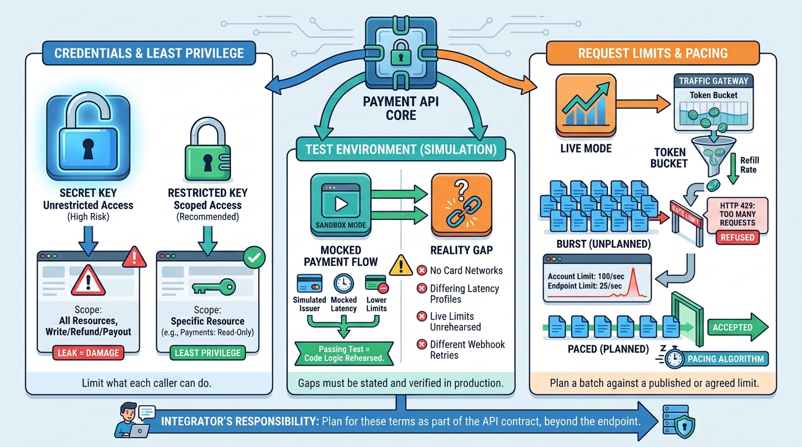

Part IV — INTERFACE: The API as the Product
Keys, Sandboxes and Limits: The Developer Platform Around the API
AI-assisted: researched and written with Claude Code; illustrations generated with Gemini. How this works

Image generated by Google Gemini (gemini-3-pro-image-preview)